Perform the following HDFS commands as specified in the assignment:
copyFromLocal (using -put).copyToLocal (using -get).-cp).-mv).# Create a local test file echo "Hadoop Ecosystem Lab - Mohammed Ibrahim" > sample_data.txt cat sample_data.txt # Create testing directories in HDFS hdfs dfs -mkdir -p /user/cloudera/dir_source hdfs dfs -mkdir -p /user/cloudera/dir_target # (i) Copy from local to HDFS using -put hdfs dfs -put sample_data.txt /user/cloudera/dir_source/ hdfs dfs -ls /user/cloudera/dir_source/ hdfs dfs -cat /user/cloudera/dir_source/sample_data.txt # (ii) Copy from HDFS to local using -get rm -f sample_data.txt hdfs dfs -get /user/cloudera/dir_source/sample_data.txt ./downloaded_from_hdfs.txt ls -l downloaded_from_hdfs.txt cat downloaded_from_hdfs.txt # (iii) Copy within HDFS using -cp hdfs dfs -cp /user/cloudera/dir_source/sample_data.txt /user/cloudera/dir_target/ hdfs dfs -ls /user/cloudera/dir_source/ hdfs dfs -ls /user/cloudera/dir_target/ # (iv) Move within HDFS using -mv hdfs dfs -mkdir -p /user/cloudera/dir_moved hdfs dfs -mv /user/cloudera/dir_target/sample_data.txt /user/cloudera/dir_moved/ hdfs dfs -ls /user/cloudera/dir_target/ hdfs dfs -ls /user/cloudera/dir_moved/
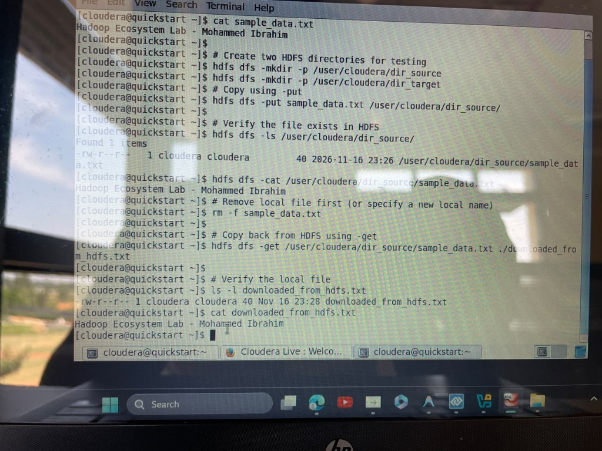
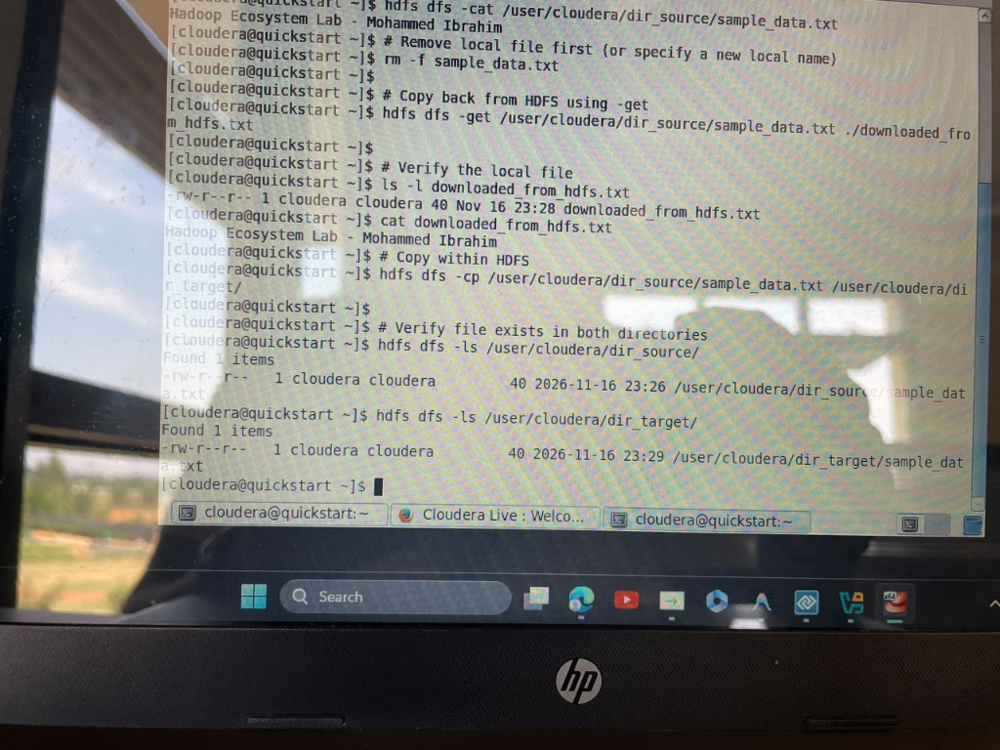
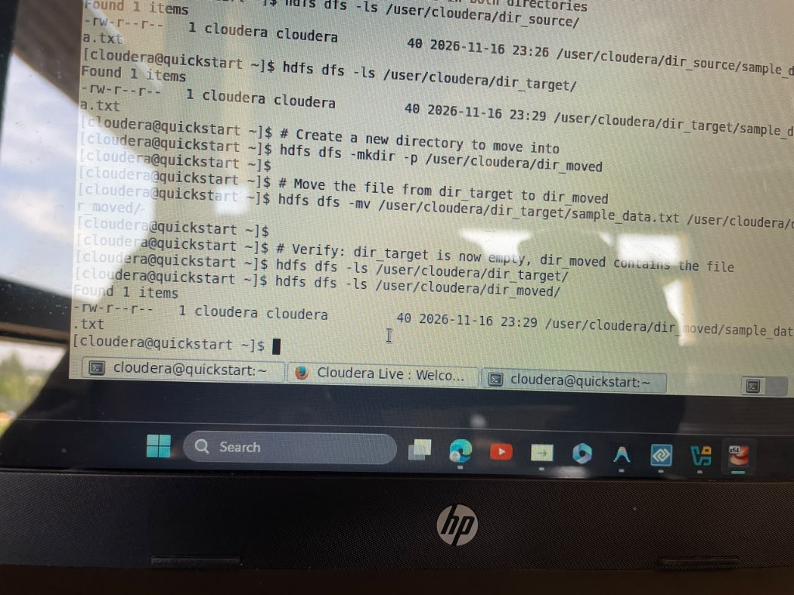
hdfs dfs -put sample_data.txt /user/cloudera/dir_source/ uploads the file into the distributed filesystem without using copyFromLocal. The output confirms the block was written with size 40 bytes. Then, the original local file is deleted using rm -f, and hdfs dfs -get successfully retrieves the file back into local Linux storage as downloaded_from_hdfs.txt. Running cat proves the file content remains identical ("Hadoop Ecosystem Lab - Mohammed Ibrahim").hdfs dfs -cp /user/cloudera/dir_source/sample_data.txt /user/cloudera/dir_target/ replicates the file within HDFS across directories. Executing hdfs dfs -ls on both dir_source and dir_target confirms that the file now simultaneously exists in both HDFS paths.hdfs dfs -mv /user/cloudera/dir_target/sample_data.txt /user/cloudera/dir_moved/ performs an atomic namespace relocation. The terminal output of hdfs dfs -ls /user/cloudera/dir_target/ shows 0 items (directory is empty), while /user/cloudera/dir_moved/ contains the 40-byte sample_data.txt.Develop and execute a distributed MapReduce program using Hadoop Streaming to parse meteorological observation logs and compute the maximum recorded temperature for each calendar year.
# mapper.py
import sys
for line in sys.stdin:
line = line.strip()
if line:
parts = line.split()
if len(parts) >= 5:
year = parts[0]
temperature = int(parts[4])
print "%s\t%s" % (year, temperature)
# reducer.py
import sys
current_year = None
max_temp = -9999
for line in sys.stdin:
line = line.strip()
if line:
year, temp = line.split('\t')
temp = int(temp)
if current_year == year:
if temp > max_temp:
max_temp = temp
else:
if current_year:
print "%s\t%d" % (current_year, max_temp)
current_year = year
max_temp = temp
if current_year:
print "%s\t%d" % (current_year, max_temp)
# Distributed Execution via Hadoop Streaming:
hadoop jar /usr/lib/hadoop-mapreduce/hadoop-streaming.jar \
-input /user/cloudera/temp_input/temperature_data.txt \
-output /user/cloudera/temp_output \
-mapper mapper.py -file mapper.py \
-reducer reducer.py -file reducer.py
# Inspect results:
hdfs dfs -cat /user/cloudera/temp_output/part-00000
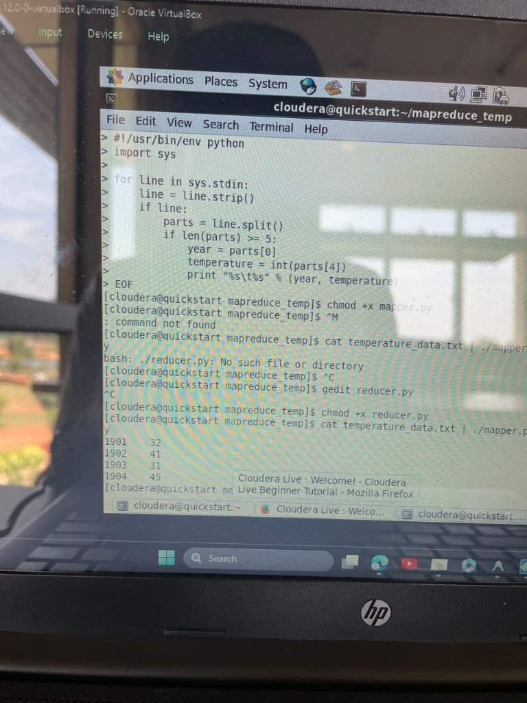
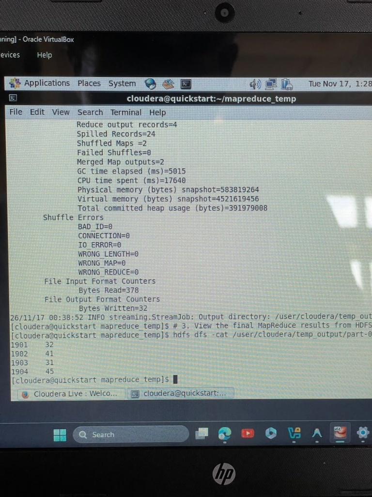
mapper.py and reducer.py via standard Unix pipes (cat temperature_data.txt | ./mapper.py | sort | ./reducer.py). The pipeline correctly filters observation rows and computes candidate annual maximums: 1901: 32, 1902: 41, 1903: 31, and 1904: 45.hdfs dfs -cat /user/cloudera/temp_output/part-00000 reads the distributed part file directly from HDFS, validating that the annual maximum temperature calculations executed across the cluster with complete numerical precision.Create a structured relational table in Apache Hive, load structured comma-separated data from the local Linux operating system filesystem into the Hive table, and export table records back into a local filesystem directory.
CREATE DATABASE IF NOT EXISTS lab_db;
USE lab_db;
-- 1. Create Employee Table
CREATE TABLE IF NOT EXISTS employee (
id INT,
name STRING,
salary DOUBLE,
dept STRING
)
ROW FORMAT DELIMITED
FIELDS TERMINATED BY ','
STORED AS TEXTFILE;
-- 2. Load Local Data File into Hive Table
LOAD DATA LOCAL INPATH '/home/cloudera/emp_data.txt' INTO TABLE employee;
-- 3. Query and Verify Ingested Records
SELECT * FROM employee;
-- 4. Export Table Data to Local Directory
INSERT OVERWRITE LOCAL DIRECTORY '/home/cloudera/hive_export'
ROW FORMAT DELIMITED
FIELDS TERMINATED BY ','
SELECT * FROM employee;
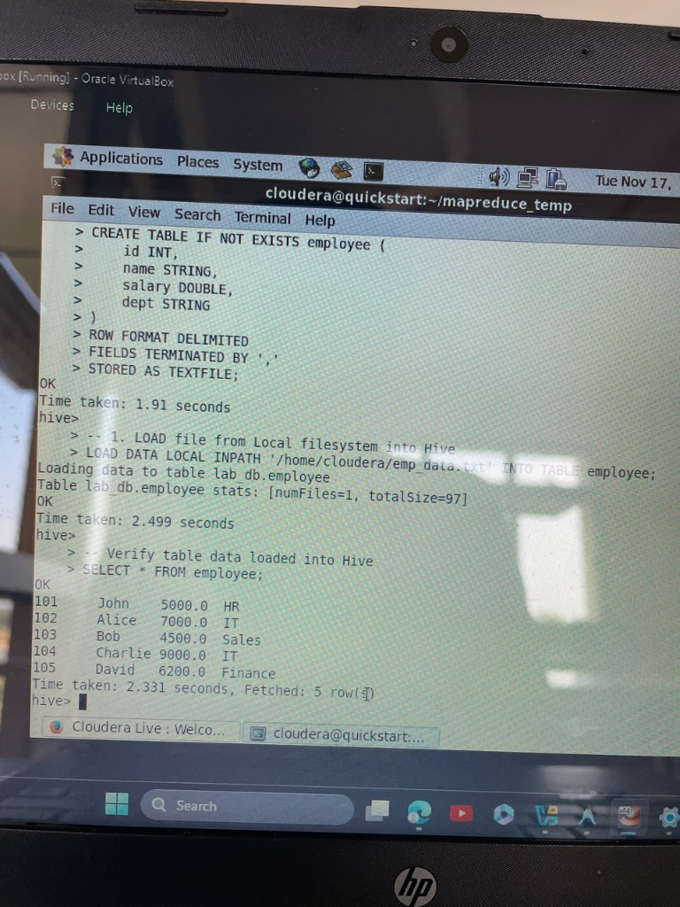
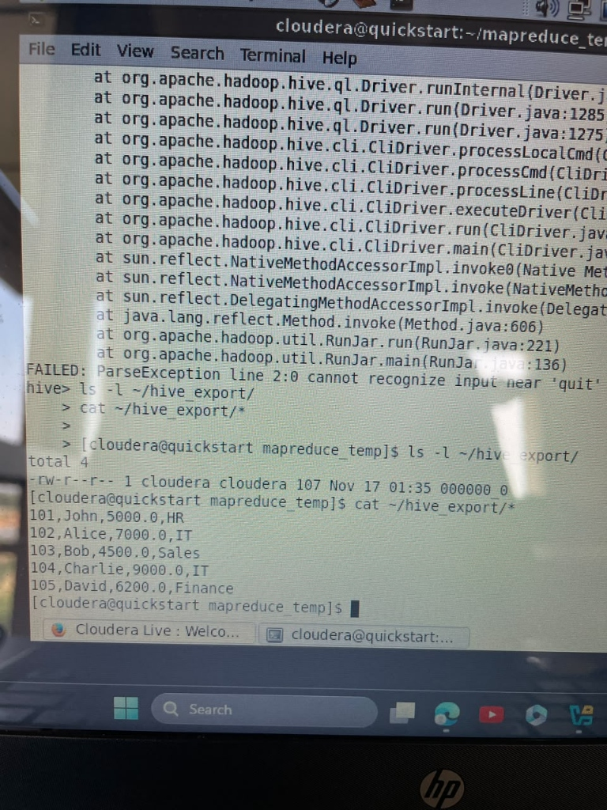
employee with columns id INT, name STRING, salary DOUBLE, dept STRING delimited by commas. Executing LOAD DATA LOCAL INPATH '/home/cloudera/emp_data.txt' INTO TABLE employee; copies the raw file into HDFS under the Hive warehouse directory (/user/hive/warehouse/lab_db.db/employee). The subsequent SELECT * FROM employee; returns all 5 employee records (John, Alice, Bob, Charlie, David) populated into the schema.INSERT OVERWRITE LOCAL DIRECTORY '/home/cloudera/hive_export'. In the Linux shell, running ls -l ~/hive_export/ reveals part file 000000_0. Executing cat ~/hive_export/* prints the comma-delimited records back onto the local terminal, proving successful round-trip data migration from Local → Hive → Local.Perform Data Definition Language (DDL) operations on Hive tables including schema alteration (adding columns), structure inspection, and executing analytical queries using WHERE, ORDER BY, and GROUP BY clauses.
USE lab_db; -- 1. Alter Schema: Add 'location' column to employee table ALTER TABLE employee ADD COLUMNS (location STRING); -- 2. Inspect Updated Table Schema DESCRIBE employee; -- 3. Filter Query: High earners (Salary > 6000) SELECT * FROM employee WHERE salary > 6000; -- 4. Sort Query: Sort employees by salary descending SELECT id, name, salary, dept FROM employee ORDER BY salary DESC; -- 5. Aggregation Query: Headcount and Average Salary per Department SELECT dept, COUNT(*) AS emp_count, AVG(salary) AS avg_salary FROM employee GROUP BY dept;
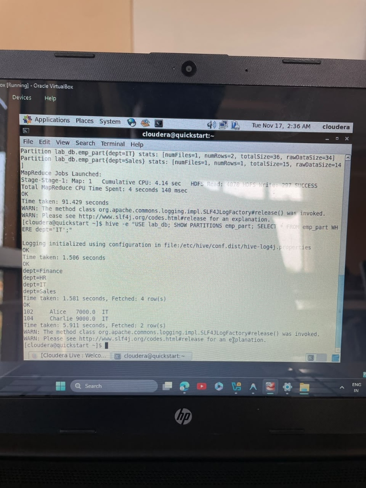
ALTER TABLE employee ADD COLUMNS (location STRING); alters the Hive Metastore relational catalog. Running DESCRIBE employee; confirms that column location of type string has been appended to the schema without requiring table truncation.WHERE salary > 6000): Filters out lower earners and accurately outputs employees earning above 6000: Alice (7000.0), Charlie (9000.0), and David (6200.0).ORDER BY salary DESC): Executes a MapReduce reducer sort that returns rows ranked in descending salary order: Charlie (9000.0), Alice (7000.0), David (6200.0), John (5000.0), and Bob (4500.0).GROUP BY dept): Triggers distributed aggregations displaying accurate department-level statistics:
Demonstrate Hive query optimization mechanisms by creating a Partitioned Table (segregating data by department into separate subdirectories) and a Bucketed Table (clustering data based on hash values of employee ID into distinct bucket files).
USE lab_db;
-- 1. Create and Populate Partitioned Table
CREATE TABLE IF NOT EXISTS emp_part (
id INT, name STRING, salary DOUBLE
)
PARTITIONED BY (dept STRING)
ROW FORMAT DELIMITED FIELDS TERMINATED BY ',';
SET hive.exec.dynamic.partition = true;
SET hive.exec.dynamic.partition.mode = nonstrict;
INSERT OVERWRITE TABLE emp_part PARTITION(dept)
SELECT id, name, salary, dept FROM employee;
SHOW PARTITIONS emp_part;
SELECT * FROM emp_part WHERE dept = 'IT';
-- 2. Create and Populate Bucketed Table
CREATE TABLE IF NOT EXISTS emp_buck (
id INT, name STRING, salary DOUBLE, dept STRING
)
CLUSTERED BY (id) INTO 3 BUCKETS
ROW FORMAT DELIMITED FIELDS TERMINATED BY ',';
SET hive.enforce.bucketing = true;
INSERT OVERWRITE TABLE emp_buck
SELECT id, name, salary, dept FROM employee;
-- 3. Verify Bucket Files in HDFS
hdfs dfs -ls /user/hive/warehouse/lab_db.db/emp_buck/
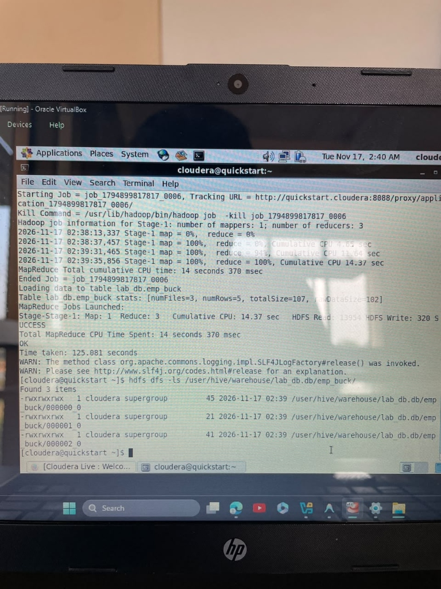
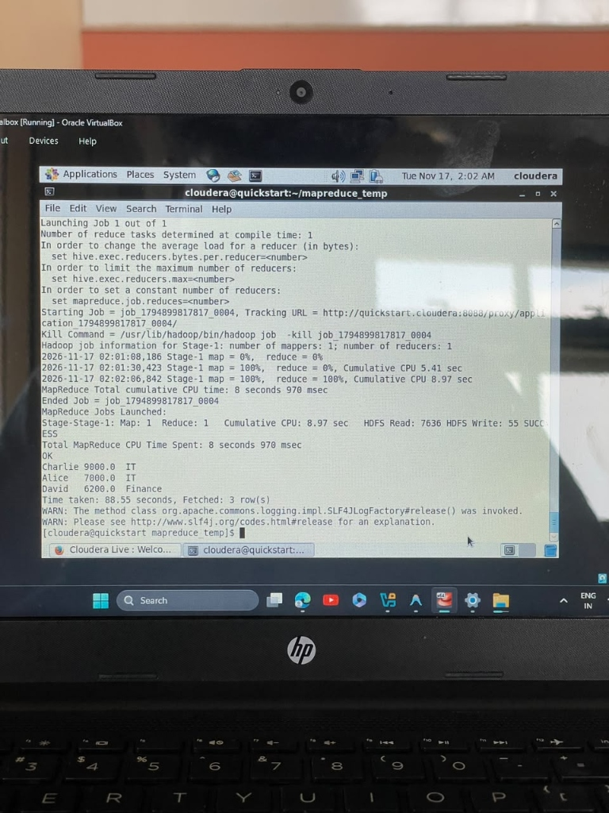
dept=Finance, dept=HR, dept=IT, and dept=Sales. Running SHOW PARTITIONS emp_part; lists all four partitions. The query SELECT * FROM emp_part WHERE dept='IT'; reads solely from the dept=IT HDFS folder, returning Alice and Charlie while completely pruning away all other department folders, optimizing scan efficiency.emp_buck was configured with CLUSTERED BY (id) INTO 3 BUCKETS. The HDFS listing command hdfs dfs -ls /user/hive/warehouse/lab_db.db/emp_buck/ shows three distinct part files: 000000_0 (45 bytes), 000001_0 (21 bytes), and 000002_0 (41 bytes). Records are placed into buckets based on hash(id) % 3, enabling rapid map-side joins.Perform an automated Sqoop import operation to transfer structured relational data from a MySQL database table (retail_db.customers) into Hadoop and create a corresponding managed table in Apache Hive.
-- 1. MySQL Preparation
mysql -u root -pcloudera -e "
CREATE DATABASE IF NOT EXISTS retail_db;
USE retail_db;
DROP TABLE IF EXISTS customers;
CREATE TABLE customers (
cust_id INT PRIMARY KEY,
name VARCHAR(50),
city VARCHAR(50)
);
INSERT INTO customers VALUES
(1, 'Mohammed', 'Bangalore'),
(2, 'Ibrahim', 'Bellary'),
(3, 'Rahul', 'Mysore');
SELECT * FROM customers;"
-- 2. Execute Sqoop Import to Hive Table
sqoop import \
--connect jdbc:mysql://localhost/retail_db \
--username root \
--password cloudera \
--table customers \
--hive-import \
--hive-table lab_db.imported_customers \
--create-hive-table \
-m 1
-- 3. Verify in Hive
hive -e "USE lab_db; SELECT * FROM imported_customers;"
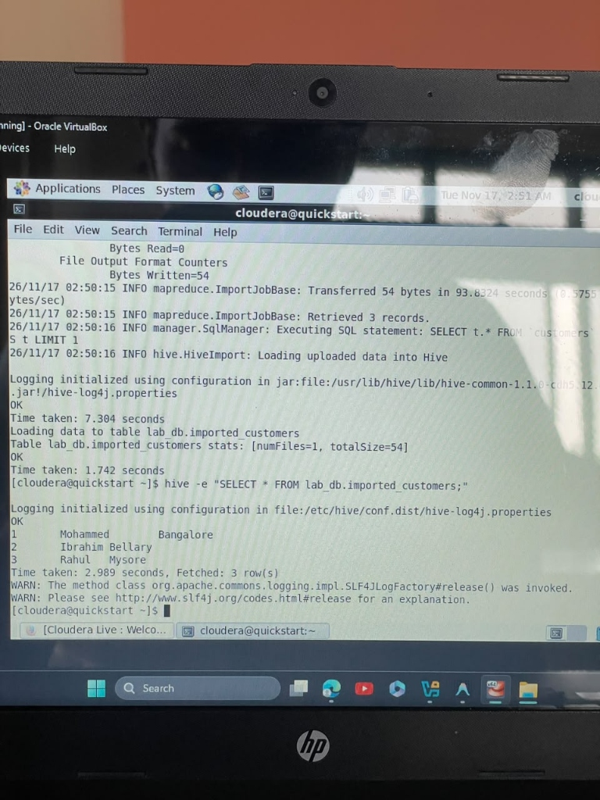
retail_db.customers, and generates an internal MapReduce job using 1 mapper (-m 1).--hive-import and --create-hive-table, Sqoop automatically generates the table schema in Hive metastore (lab_db.imported_customers) and loads the HDFS output directly into the table warehouse path.hive -e "USE lab_db; SELECT * FROM imported_customers;" confirms that all 3 customer rows (1: Mohammed - Bangalore, 2: Ibrahim - Bellary, 3: Rahul - Mysore) are successfully ingested into Hive.Export processed data stored in an HDFS directory / Hive managed table (lab_db.employee) back into an external relational database table in MySQL using Apache Sqoop export.
-- 1. Create Target Destination Table in MySQL
mysql -u root -pcloudera -e "
USE retail_db;
DROP TABLE IF EXISTS exported_employees;
CREATE TABLE exported_employees (
id INT PRIMARY KEY,
name VARCHAR(50),
salary DOUBLE,
dept VARCHAR(50)
);
DESCRIBE exported_employees;"
-- 2. Execute Sqoop Export Job
sqoop export \
--connect jdbc:mysql://localhost/retail_db \
--username root \
--password cloudera \
--table exported_employees \
--export-dir /user/hive/warehouse/lab_db.db/employee \
--input-fields-terminated-by ',' \
-m 1
-- 3. Verify Exported Data in MySQL
mysql -u root -pcloudera -e "
USE retail_db;
SELECT * FROM exported_employees;"
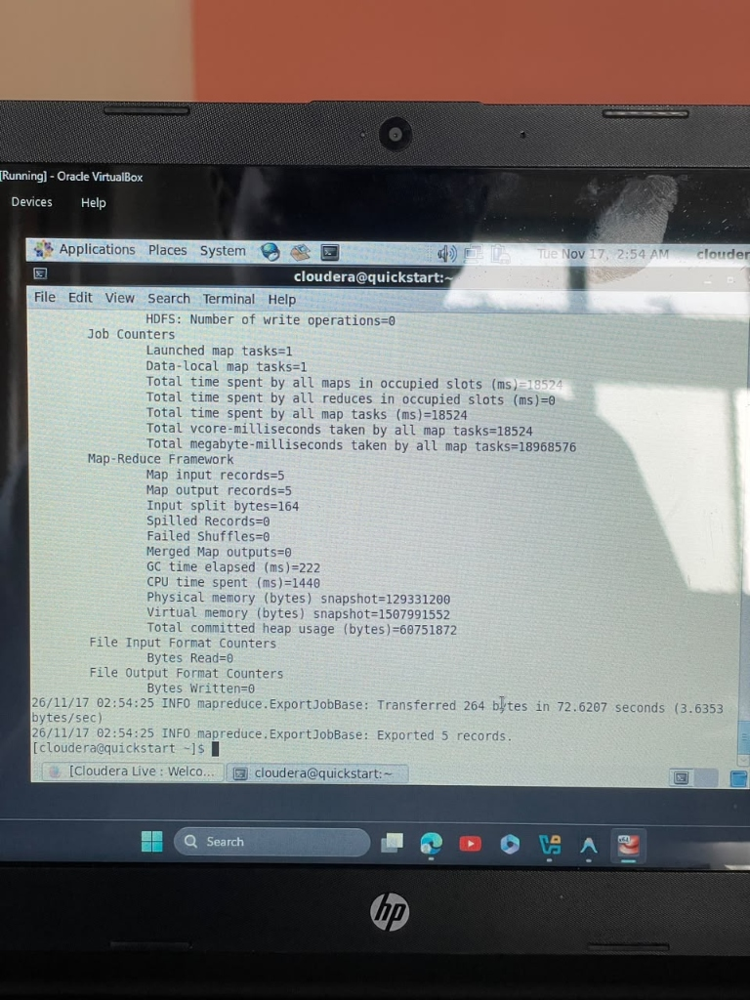
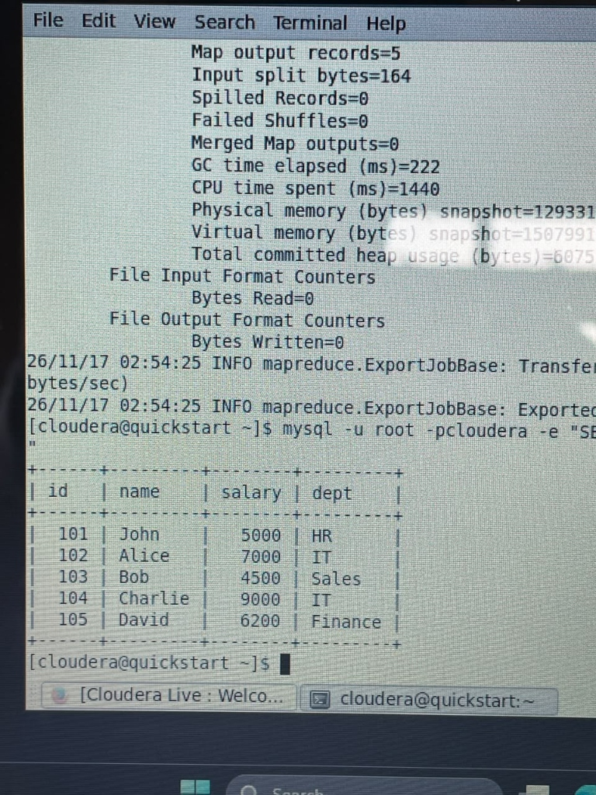
/user/hive/warehouse/lab_db.db/employee were parsed and translated into SQL insert queries.mysql -u root -pcloudera -e "USE retail_db; SELECT * FROM exported_employees;". The tabular output confirms that all 5 employee records (101: John, 102: Alice, 103: Bob, 104: Charlie, 105: David) were transferred accurately into the relational MySQL database.All seven assigned practical programs on the Hadoop Ecosystem were executed and verified within the Cloudera QuickStart virtual environment:
-put, -get, -cp, -mv).